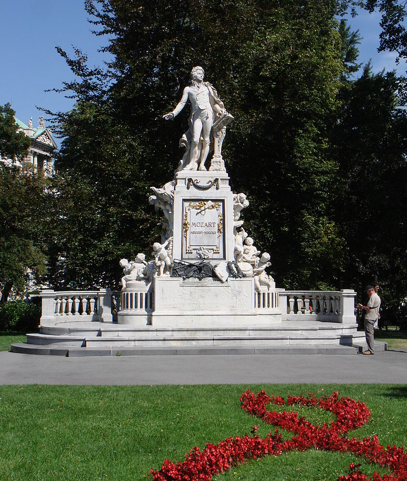

Wolfgang Amadeus Mozart
Wolfgang Amadeus Mozart (n. 27 ianuarie 1756, Salzburg - d. 5 decembrie 1791, Viena) a fost un compozitor austriac, unul din cei mai prodigioși și talentați creatori în domeniul muzicii clasice. Anul 2006, cu ocazia jubileului a 250 de ani de la nașterea compozitorului, în Austria și Germania a fost cunoscut ca „Anul Muzical Mozart”.
În scurta sa viață, Wolfgang Amadeus Mozart a compus un număr enorm de opere muzicale, cele mai multe neegalate în frumusețe sau profunzime. În 1862 Ludwig von Köchel a clasificat și catalogat compozițiile lui Mozart, fiind numerotate cu mențiunea KV (Köchel-Verzeichnis = catalogul Köchel). Ultima sa creație, Requiem-ul, are numărul 626.
Mozart a fost autorul a 41 de simfonii, printre care sunt de menționat Simfonia nr. 35 Haffner, nr. 36 Linz, nr. 40 și nr. 41 Jupiter.
A compus 27 concerte pentru pian și orchestră, 7 concerte pentru vioară și orchestră, concerte pentru clarinet, pentru harpă și flaut, pentru corn și orchestră, 2 simfonii concertante, divertismente, serenade.
În domeniul muzicii de cameră sunt de menționat cele 6 cvartete pentru coarde dedicate lui Haydn, sonate pentru pian, sonate pentru vioară și pian, triouri pentru vioară, violoncel și pian, cvartete pentru instrumente de suflat, sextetul O glumă muzicală etc.
Pasionat de operă, a compus 17 opere, dintre care cele mai cunoscute, jucate și astăzi pe scenele tuturor teatrelor de operă din lume, sunt: Răpirea din Serai, Nunta lui Figaro, Don Giovanni, Cosi fan tutte, Flautul fermecat.
A mai compus 19 mise, cantate, motete pentru soprană și orchestră, oratoriul "Die Schuldigkeit des ersten Gebots" și, în fine, "Requiem"-ul în re minor.
